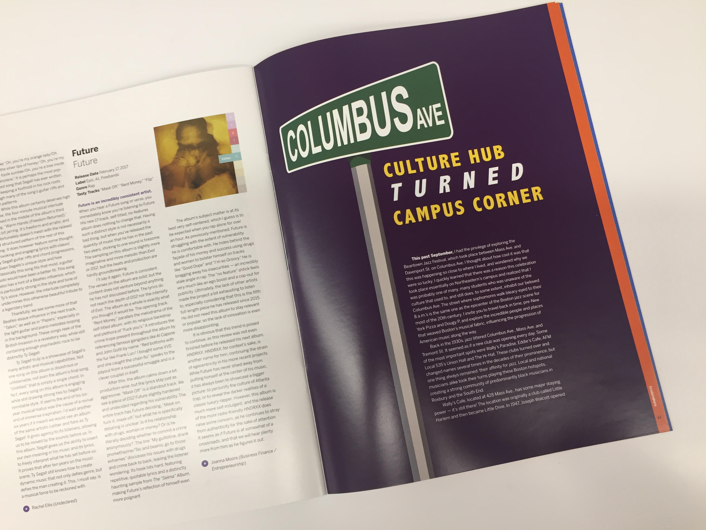
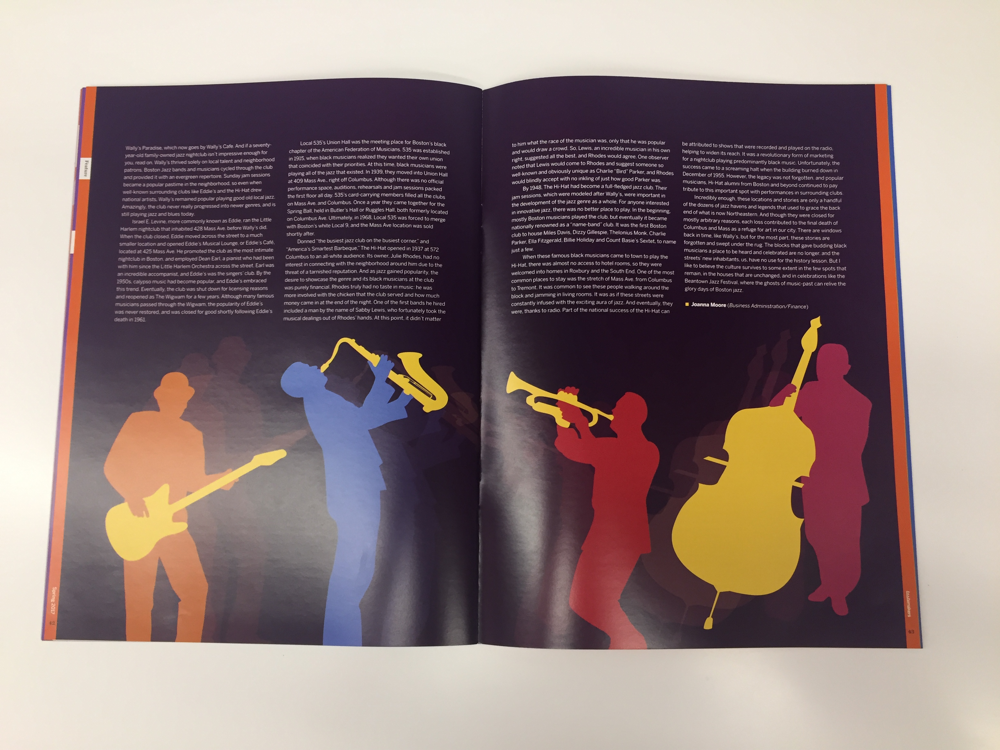

Tastemakers Magazine
Spring 2017 - Present
Editorial Designer for music magazine
Tastemakers is a Northeastern University based magazine that allows students to have a voice in the music industry. As a designer, I began with a style guide and worked from there. During meetings, we showed off our work and received feedback on what we could improve for next week. All of the final spreads are combined and printed to create the final magazine.
So far I have only been on the team for one issue, however, I look forward to continuing my work with Tastemakers during the next school year.


Columbus Avenue Jazz, Adobe Illustrator and InDesign